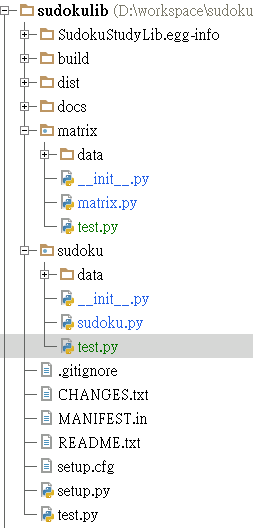

這個專案是一個 Python 程式庫以便讓使用者學習邏輯與 Python 程式設計。它包含了兩個套件，一個是 Sudoku，另一個是 Matrix。Sudoku 是一個以物件導向程式設計的模組，而 Matrix 則是一個傳統程式設計的模組。
這個專案與文件只要是提供給 Sudoku 套件來使用。Matrix 只是提供給傳統程式設計者做一參考。
你可以使用 pip 來安裝這個專案:
pip install SudokuStudyLib
你也可以到下列網址來複製整個專案:
https://github.com/RobertOfTaiwan/SudokuStudyLib
當你安裝完畢後，你安裝的目錄應包含了兩個套件，sudoku 及 matrix。下面就是整個目錄的結構表:
物件導向：sudoku，在 test.py:
from sudoku import *
# to solve a sudoku defined in data directory
solve("m18.data")
pass
# to solve a sudoku and just using the methods which level <= 15 and if can't solve, don't use guess method
solve("m3.data", level_limit=15, use_try=False)
pass
# to solve a sudoku with emulator methods and print the steps
solve("m12.data", use_emu=True, print_step=True)
pass
# to solve the world's best difficult sudoku
# by default method
solve("m10.data")
# by computer's try error
try_error(None, file="m10.data")
# by all methods but not using human guessing, it can't solve the sudoku
solve("m10.data", use_emu=True, use_try=False)
# by basic human methods and guess
solve("m10.data", level_limit=10, use_try=True)
solve("m10.data", level_limit=3, use_try=True)
傳統方法 ：matrix，在 test.py:
from matrix import *
# solve it directly
m, n, p = main("m6.data")
# solve it by limit methods, it can't solve the sudoku
m, n, p = main("m3.data", methods=8)
# set the limit methods to the 10, and it can solve the sudoku
m, n, p = main("m3.data", methods=10)
# using the try error's method to solve the best difficult sudoku in the world
m, n, p = TryError("m10.data")